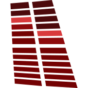

Claraboya Estudio
Grabamos, producimos, mezclamos y masterizamos en Vicente López. También mezclamos y masterizamos a distancia. Estas herramientas son las que usamos todos los días.
Se bajan aparte
AirMixTu Behringer X Air desde la tablet. Es otra app de Android.
Claraboya GrabPlugin para Cubase en Windows (y programa suelto). Pegás un link y te baja la referencia como WAV. Para escuchar referencias, no para usar ese audio en una producción.
Tus datos
Esta app
Ver como página webVuelve a la vista de siempre en esta pestaña.
Invitanos un cafecitoSi la app te sirve, así nos das una mano.
Hecha en Claraboya Estudio · Vicente López